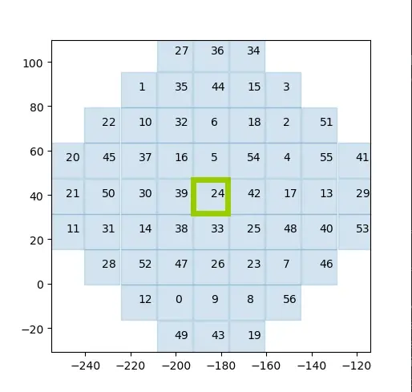
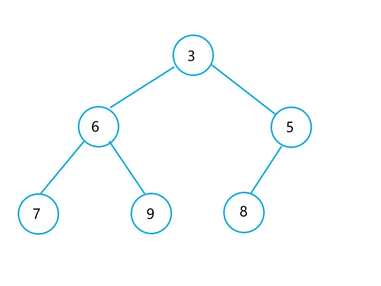
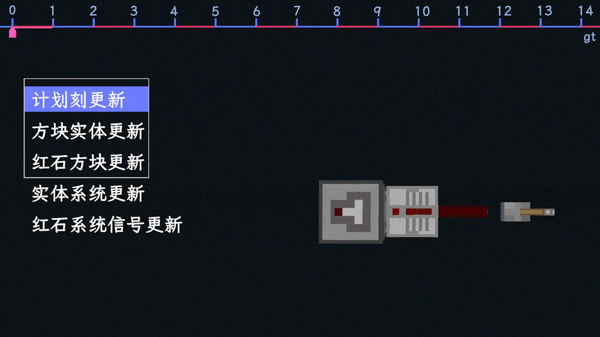
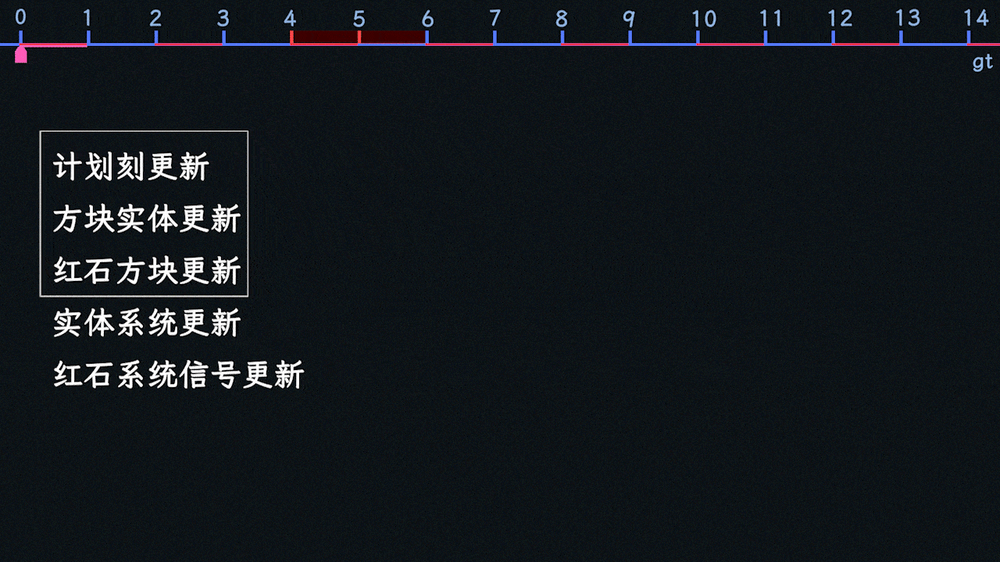
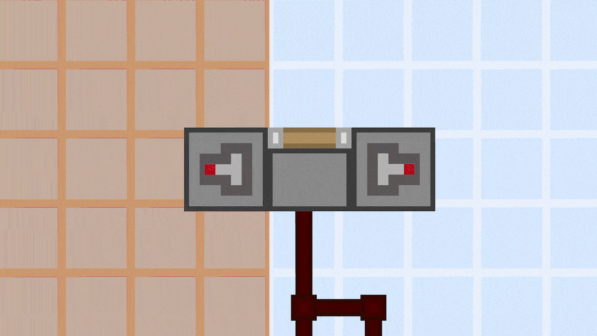

1 部分旧知识快速回顾
最好还是看看MCBE- 源码级分析
1.1 单游戏刻内更新顺序
这是精简后的更新顺序表，其中标蓝的属于区块更新。
1.2 区块更新
游戏每gt会以玩家为单位，按一定顺序更新该玩家模拟距离内加载的所有区块。在模拟距离为4时，单人玩家一般会有57个区块会更新。每次区块更新包含随机刻、计划刻、方块实体更新等。
区块间更新顺序每20gt打乱一次。

更新范围，数字表示顺序 - 图源@hhhxiao_
1.3 计划刻
计划刻列表是一个基于最小堆的优先队列，按照计划刻的执行时间进行排列。每个区块都有一个计划刻列表，各区块在更新计划刻时，会依次从列表中取出需要执行的计划刻(最多100个，多的推迟)，放入另一个优先队列中，然后从这第二个队列中再次逐个取出计划刻，并执行。计划刻的添加可以在其它阶段。
计划刻眼中的当前时间不是全局时间，而是每个列表单独维护一个计时器，在更新计划刻时，计划刻列表会将计时器+1。这导致了不同区块计划刻列表时间的不同步。
比如57个区块中，有27个区块完成了计划刻更新，它们的计时器假设均为10；而剩下的30个区块还没有更新计划刻，那么它们的计时器就会慢1gt，也就是9.

最小堆示意图
1.4 红石方块更新
大部分红石元件产生可见反应的阶段，比如中继器的亮起熄灭。
1.5 红石系统信号更新
所有红石元件计算信号的阶段，但此时不会有可见的行为，只会有元件内部信号的变化。
2 观察者行为分析
2.1 观察者与更新源处于同区块
以观察中继器为例，假设某个红石刻的红石系统信号更新阶段，中继器决定输出信号，那么在下一gt的红石方块更新阶段，中继器会亮起，并向周围的方块发出更新(nc更新)。
此时，观察者收到更新后，就会向当前区块的计划刻列表添加一个2gt后的计划刻。
2gt后，计划刻阶段，在观察者执行计划刻时，由于观察者是红石元件，信号应当从红石刻开始产生，所以观察者会检查现在是不是红石刻，如果不是，则重新添加1gt后的计划刻；
如果是，观察者亮起，然后将新的输出设为“有”，并添加2gt后的计划刻用于熄灭。
同一gt，红石系统信号更新阶段，观察者将新的输出同步至当前输出，新的输出设为“无”。
然后当前和下一gt，观察者会持续亮起。再到下一gt，计划刻阶段，观察者熄灭；红石系统信号更新阶段，观察者再次将新的输出同步至当前输出，也即当前输出为“无”。
对于本例，观察者延迟3gt，输出2gt脉冲。

动图演示-同区块
2.2 观察者与更新源处于异区块
同样以观察中继器为例，观察者在A区块，中继器在B区块，直到观察者收到更新，均与上一节一致。
此时当前区块的计划刻列表要添加计划刻，要写明该计划刻的执行时间。
前文可知，B区块已经执行到红石方块更新，所以计划刻肯定更新过了，而A区块却不一定，
如果A区块更新过了，时间是同步的(都为10)，则观察者行为与上一节一致；
如果A区块没更新过，那么A区块的时间会慢1gt(为9)，相应地，添加2gt后的计划刻，9+2=11，所以相比上一种情况，A区块添加的计划刻也会提前1gt。
如果提前1gt，计划刻执行时刚好就是红石刻，所以相对上一种情况，观察者提前2gt开始输出。

动图演示-异区块
现在把中继器换成活塞，假设某个红石刻的红石系统信号更新阶段，活塞被激活，那么下一gt的方块实体阶段，活塞开始伸出，并发出更新，观察者收到更新。
A区块添加计划刻同样会有上述问题：
假设计划刻没有提前1gt，即正常情况，则计划刻被添加在2gt后的红石刻，则从该红石刻开始，观察者亮起2gt；
假设计划刻提前了1gt，则计划刻添加在了1gt后的非红石刻，由于不是红石刻，所以到这时候，观察者会重新添加1gt后的计划刻，此时与上一种情况结果一致。
可见观察者检测活塞和被推动方块时有抗跨区块损坏能力，但是能力有限，当活塞不断更新观察者时，观察者依然会受到影响。
已知观察者不能重复添加计划刻，不论计划刻是用于亮起还是熄灭。相关时序分析交由读者完成。

图中情况下，观察者仍会输出不正常
2.3 其它特性
观察者检测某些方块时(比如常亮的红石粉、有东西的箱子等)，会在重进存档后输出一次脉冲。
这其实不是观察者的问题，那些方块确实会在重进存档时发出更新。
3 后记
没有后记。
END.